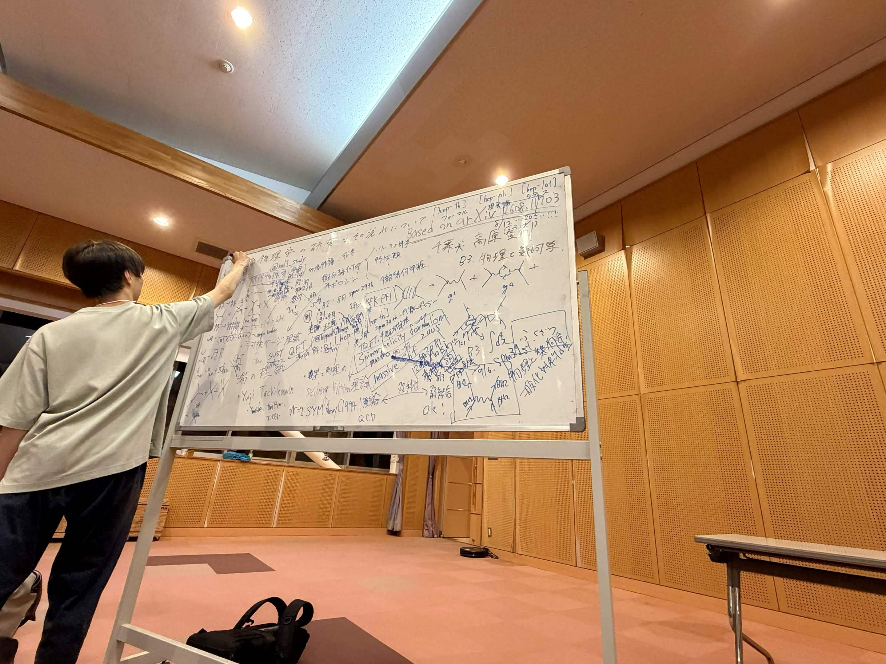

高原 賢都 / Kento Takahara
Third-year student, Advanced Physics Course, Advanced Science Program, Faculty of Science, Chiba University
Center for Frontier Science · Chiba Particle Physics Group (CPP), Chiba University
Supervisor: Teppei Kitahara
I study scattering amplitudes. I am also interested in quantum field theory and related geometry.

News
All news- Gave a contributed talk at the 81st Annual Meeting of the Physical Society of Japan
- Uploaded the slides for the 31st Suubutsu Seminar special lecture
- Participated in the YITP workshop “Progress in Particle Physics (PPP) 2026.” The slides from my oral presentation are available here.
- Launched this website
- Submitted a preprint to arXiv
- Participated in the 72nd Summer School for Young Researchers in Nuclear and Particle Physics
- The brochure for Chiba University's Advanced Science Program has been published. I am also featured briefly. Please have a look if you are interested
Publications
-
On-Shell Amplitudes and Black-Hole Perturbations: Exact Reissner-Nordström Mixing
Kento Takahara and Teppei Kitahara / arXiv:2608.11703 [hep-th]